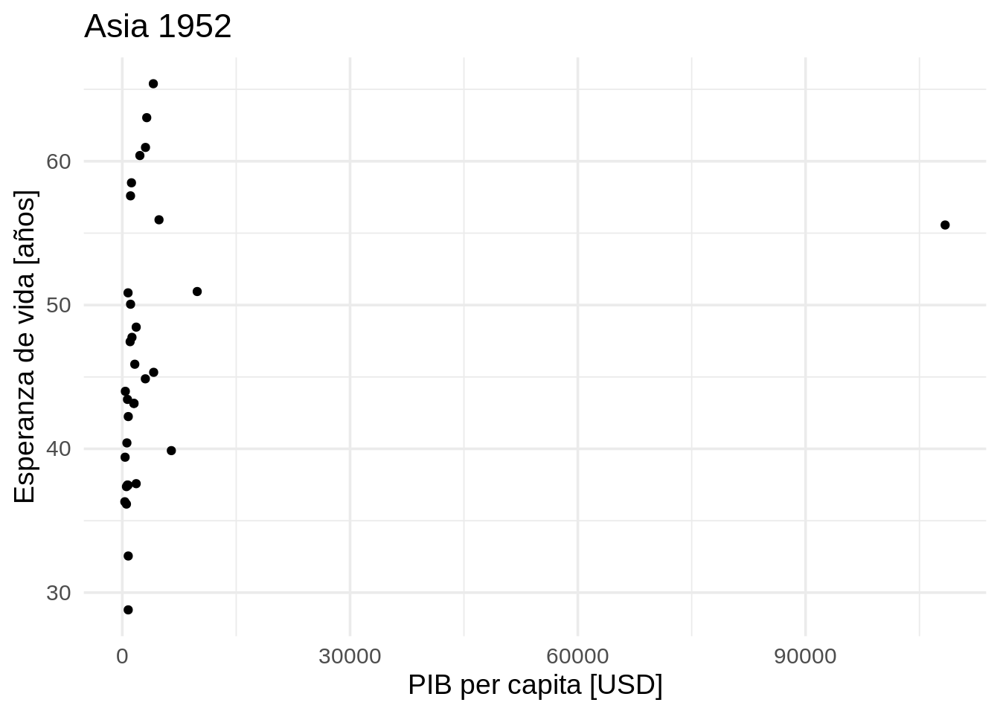
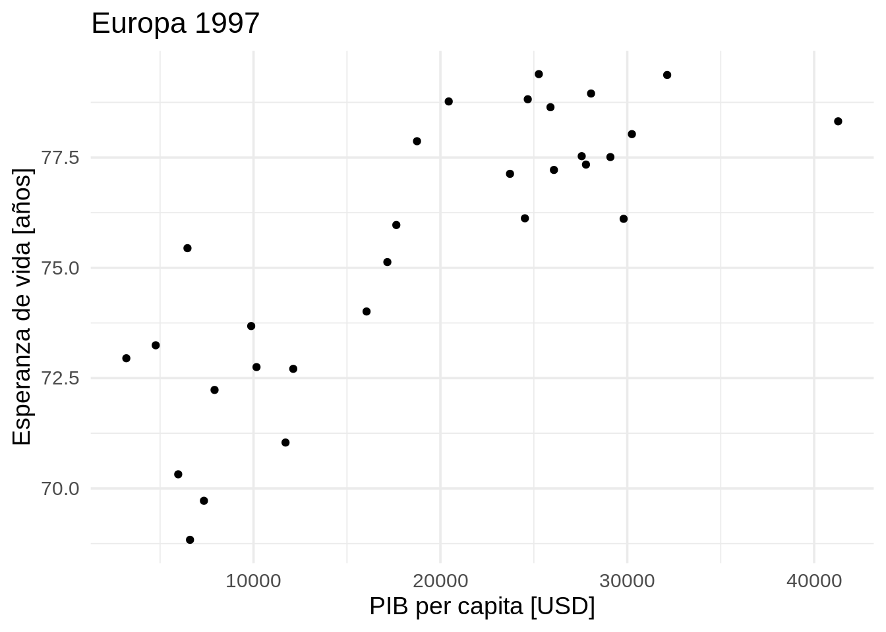

Iteraciones en R
Funciones para iterar
Base R
Familia apply
apply(),lapply(),sapply(),vapply(),mapply(),rapply(),tapply()
Tidyverse
Paquete
purrren relación a la familiamapmap(),map_lgl(),map_chr(),map_int(),map_dbl(),map_raw(),map_dfr(),map_dfc(),walk()
Las funciones
mapenpurrrsiempre retornan una lista o listas.
Subgrupos
purrr::map()- aplica una función a cada elemento en una lista o vector.purrr::map2()- aplica una función a un par de elementos de dos listas o vectores.purrr::pmap()- aplica una función a un grupo de elementos de una lista de listas.
Cada uno de ellos tiene subfunctiones con el sufijo del tipo de valores que se desean retornar, por ejemplo purrr::map_dbl() devuleve un vector númerico y purrr::map_lgl() uno de valores lógicos.
Adicionalmente, si no deseamos retornar nada (en otras palabras, llamar a una función por sus “efectos secundarios”, como graficar), podemos reemplazar map por walk:
+ purrr::walk() - aplica una función a cada elemento en una lista o vector.
+ purrr::walk2() - aplica una función a un par de elementos de dos listas o vectores.
+ purrr::pwalk() - aplica una función a un grupo de elementos de una lista de listas.
Ejemplos
mtautos es el equivalente en español a mtcars
`%>%` <- magrittr::`%>%`
# data("mtautos", package = "datos")
mtautos <- datos::mtautos
mtautos %>%
dplyr::group_by(cilindros) %>%
dplyr::summarise(mean(millas))## # A tibble: 3 × 2
## cilindros `mean(millas)`
## <dbl> <dbl>
## 1 4 26.7
## 2 6 19.7
## 3 8 15.1paises es el equivalente en español a gapminder (del paquete gapminder)
paises <- datos::paises
head(paises)## # A tibble: 6 × 6
## pais continente anio esperanza_de_vida poblacion pib_per_capita
## <fct> <fct> <int> <dbl> <int> <dbl>
## 1 Afganistán Asia 1952 28.8 8425333 779.
## 2 Afganistán Asia 1957 30.3 9240934 821.
## 3 Afganistán Asia 1962 32.0 10267083 853.
## 4 Afganistán Asia 1967 34.0 11537966 836.
## 5 Afganistán Asia 1972 36.1 13079460 740.
## 6 Afganistán Asia 1977 38.4 14880372 786.Ejemplo 1
Definamos una función muy simple
suma_diez <- function(x) {
return(x + 10)
}Apliquemos la función usando purrr::map
purrr::map(.x = c(1:5),
.f = suma_diez)## [[1]]
## [1] 11
##
## [[2]]
## [1] 12
##
## [[3]]
## [1] 13
##
## [[4]]
## [1] 14
##
## [[5]]
## [1] 15# O sin los nombres:
# purrr::map(c(1:5), suma_diez)Pero, ¿no sería mejor retornar un vector númerico?
purrr::map_dbl(c(1:5), suma_diez)## [1] 11 12 13 14 15¿Y qué tal si queremos un data frame?
purrr::map_df(c(1:5), suma_diez)## Error in `dplyr::bind_rows()`:
## ! Argument 1 must have names.purrr::map_df(c(1:5), function(x) c(nuevo = x + 10))## # A tibble: 5 × 1
## nuevo
## <dbl>
## 1 11
## 2 12
## 3 13
## 4 14
## 5 15Algo no anda bien, esto se debe a nuestra definición de la función suma_diez, que solo retorna un vector númerico. Podríamos definir una nueva función o podemos aprender un pequeño truco (funciones anónimas):
purrr::map_df(c(1:5),
function(x) {
data.frame(original = x,
nuevo = x + 10)
})## original nuevo
## 1 1 11
## 2 2 12
## 3 3 13
## 4 4 14
## 5 5 15Advertencia: No es recomendable usar este “truco” para funciones muy complejas, siempre es mejor definir la función por separado y luego usarla dentro de map.
Otra forma:
purrr::map_df(c(1:5), ~data.frame(original = .x, nuevo = .x + 10))## original nuevo
## 1 1 11
## 2 2 12
## 3 3 13
## 4 4 14
## 5 5 15Ejemplo 2
Usemos el dataset llamado paises, para ver las classes de cada columna:
paises %>% purrr::map_chr(class)## pais continente anio esperanza_de_vida
## "factor" "factor" "integer" "numeric"
## poblacion pib_per_capita
## "integer" "numeric"Si queremos ver el número de valores únicos en cada columna:
paises %>% purrr::map_dbl(dplyr::n_distinct)## pais continente anio esperanza_de_vida
## 142 5 12 1626
## poblacion pib_per_capita
## 1704 1704Podríamos resumir las dos operaciones anteriores en un solo paso:
paises %>%
purrr::map_df(~data.frame(clase = class(.x),
n_distintos = dplyr::n_distinct(.x)))## clase n_distintos
## 1 factor 142
## 2 factor 5
## 3 integer 12
## 4 numeric 1626
## 5 integer 1704
## 6 numeric 1704¿Y los nombres de las variables?
paises %>%
purrr::map_df(~data.frame(clase = class(.x),
n_distintos = dplyr::n_distinct(.x)),
.id = "variable")## variable clase n_distintos
## 1 pais factor 142
## 2 continente factor 5
## 3 anio integer 12
## 4 esperanza_de_vida numeric 1626
## 5 poblacion integer 1704
## 6 pib_per_capita numeric 1704Ejemplo 3
Mapeos sobre dos objetos:
Extraígamos los continentes y años de paises:
continente_anio <- paises %>%
dplyr::distinct(continente, anio)
head(continente_anio)## # A tibble: 6 × 2
## continente anio
## <fct> <int>
## 1 Asia 1952
## 2 Asia 1957
## 3 Asia 1962
## 4 Asia 1967
## 5 Asia 1972
## 6 Asia 1977lista_de_graficos <-
purrr::map2(.x = continente_anio$continente,
.y = continente_anio$anio,
.f = ~paises %>%
dplyr::filter(continente == .x,
anio == .y) %>%
ggplot2::ggplot() +
ggplot2::geom_point(ggplot2::aes(x = pib_per_capita,
y = esperanza_de_vida)) +
ggplot2::labs(title = paste(.x, .y),
x = "PIB per capita [USD]",
y = "Esperanza de vida [años]")
)
lista_de_graficos[[1]]
lista_de_graficos[[22]]
¿Y para más de dos objetos? Podemos usar pmap.
paises %>%
dplyr::slice(1:2) %>%
purrr::pmap(function(pais, continente, anio, ...) {
paises %>%
dplyr::filter(pais == !!pais,
continente == !!continente,
anio == !!anio)
})## [[1]]
## # A tibble: 1 × 6
## pais continente anio esperanza_de_vida poblacion pib_per_capita
## <fct> <fct> <int> <dbl> <int> <dbl>
## 1 Afganistán Asia 1952 28.8 8425333 779.
##
## [[2]]
## # A tibble: 1 × 6
## pais continente anio esperanza_de_vida poblacion pib_per_capita
## <fct> <fct> <int> <dbl> <int> <dbl>
## 1 Afganistán Asia 1957 30.3 9240934 821.paises %>%
dplyr::distinct(pais, continente, anio) %>%
dplyr::slice(1:2) %>%
purrr::pmap(~paises %>%
dplyr::filter(pais == 1.,
continente == 2.,
anio == 3.)
)## [[1]]
## # A tibble: 0 × 6
## # … with 6 variables: pais <fct>, continente <fct>, anio <int>,
## # esperanza_de_vida <dbl>, poblacion <int>, pib_per_capita <dbl>
##
## [[2]]
## # A tibble: 0 × 6
## # … with 6 variables: pais <fct>, continente <fct>, anio <int>,
## # esperanza_de_vida <dbl>, poblacion <int>, pib_per_capita <dbl>Este código no es muy útil, pero sirve para introducir el concepto de “mapeos múlti-objeto”. Un caso en el que sería útil es si tenemos una tabla con combinaciones de párametros que deben ser ejecutados.
El !! se llama el “operador bang-bang”, podemos pensar de este como una forma de “forzar” la evaluación temprana de código antes de que la expresión en si sea ejecutada.
En el código anterior, la expresión pais == !!pais, sería evaluada como pais == "<VALOR DENTRO DE PAÍS>".
Ejemplo 4
Agrupando datos
paises_agrupados <- paises %>%
dplyr::group_by(continente) %>%
tidyr::nest()
paises_agrupados$data[[1]] %>% head()## # A tibble: 6 × 5
## pais anio esperanza_de_vida poblacion pib_per_capita
## <fct> <int> <dbl> <int> <dbl>
## 1 Afganistán 1952 28.8 8425333 779.
## 2 Afganistán 1957 30.3 9240934 821.
## 3 Afganistán 1962 32.0 10267083 853.
## 4 Afganistán 1967 34.0 11537966 836.
## 5 Afganistán 1972 36.1 13079460 740.
## 6 Afganistán 1977 38.4 14880372 786.paises_agrupados$data[[5]] %>% head()## # A tibble: 6 × 5
## pais anio esperanza_de_vida poblacion pib_per_capita
## <fct> <int> <dbl> <int> <dbl>
## 1 Australia 1952 69.1 8691212 10040.
## 2 Australia 1957 70.3 9712569 10950.
## 3 Australia 1962 70.9 10794968 12217.
## 4 Australia 1967 71.1 11872264 14526.
## 5 Australia 1972 71.9 13177000 16789.
## 6 Australia 1977 73.5 14074100 18334.Alternativamente, podemos usar purrr::pluck para extraer elementos en una lista
paises_agrupados %>%
purrr::pluck("data", 1) %>%
head()## # A tibble: 6 × 5
## pais anio esperanza_de_vida poblacion pib_per_capita
## <fct> <int> <dbl> <int> <dbl>
## 1 Afganistán 1952 28.8 8425333 779.
## 2 Afganistán 1957 30.3 9240934 821.
## 3 Afganistán 1962 32.0 10267083 853.
## 4 Afganistán 1967 34.0 11537966 836.
## 5 Afganistán 1972 36.1 13079460 740.
## 6 Afganistán 1977 38.4 14880372 786.paises_agrupados %>%
purrr::pluck("data", 5) %>%
head()## # A tibble: 6 × 5
## pais anio esperanza_de_vida poblacion pib_per_capita
## <fct> <int> <dbl> <int> <dbl>
## 1 Australia 1952 69.1 8691212 10040.
## 2 Australia 1957 70.3 9712569 10950.
## 3 Australia 1962 70.9 10794968 12217.
## 4 Australia 1967 71.1 11872264 14526.
## 5 Australia 1972 71.9 13177000 16789.
## 6 Australia 1977 73.5 14074100 18334.¿Y esto para qué sirve? Bueno, podríamos calcular valores para cada “sub-grupo”, por ejemplo: la esperanza de vida promedio por continente.
paises_agrupados %>%
dplyr::mutate(esperanza_de_vida_promedio =
purrr::map_dbl(data, ~mean(.x$esperanza_de_vida)))## # A tibble: 5 × 3
## # Groups: continente [5]
## continente data esperanza_de_vida_promedio
## <fct> <list> <dbl>
## 1 Asia <tibble [396 × 5]> 60.1
## 2 Europa <tibble [360 × 5]> 71.9
## 3 África <tibble [624 × 5]> 48.9
## 4 Américas <tibble [300 × 5]> 64.7
## 5 Oceanía <tibble [24 × 5]> 74.3Pero, podríamos usar dplyr, ¿no?
paises %>%
dplyr::group_by(continente) %>%
dplyr::summarise(esperanza_de_vida_promedio = mean(esperanza_de_vida))## # A tibble: 5 × 2
## continente esperanza_de_vida_promedio
## <fct> <dbl>
## 1 África 48.9
## 2 Américas 64.7
## 3 Asia 60.1
## 4 Europa 71.9
## 5 Oceanía 74.3La idea es ilustrar el concepto, detrás del tipo de operaciones que podríamos ejecutar con purrr.
Ajustando un modelo lineal
Usando este mismo concepto, podríamos ajustar un modelo lineal para cada continente:
paises_agrupados_ml <- paises_agrupados %>%
dplyr::mutate(ml = purrr::map(data, ~lm(esperanza_de_vida ~ poblacion + pib_per_capita + anio, data = .x)))
paises_agrupados_ml## # A tibble: 5 × 3
## # Groups: continente [5]
## continente data ml
## <fct> <list> <list>
## 1 Asia <tibble [396 × 5]> <lm>
## 2 Europa <tibble [360 × 5]> <lm>
## 3 África <tibble [624 × 5]> <lm>
## 4 Américas <tibble [300 × 5]> <lm>
## 5 Oceanía <tibble [24 × 5]> <lm>Para extraer el modelo de Asia:
paises_agrupados_ml %>%
purrr::pluck("ml", 1)##
## Call:
## lm(formula = esperanza_de_vida ~ poblacion + pib_per_capita +
## anio, data = .x)
##
## Coefficients:
## (Intercept) poblacion pib_per_capita anio
## -7.833e+02 4.228e-11 2.510e-04 4.251e-01¿Y ahora qué sigue? Podemos usar el modelo y los datos de entrada, para predecir la respuesta de los modelos:
paises_agrupados_ml_predicciones <- paises_agrupados_ml %>%
dplyr::mutate(predicciones =
purrr::map2(ml, data, ~predict(.x, .y)))
paises_agrupados_ml_predicciones## # A tibble: 5 × 4
## # Groups: continente [5]
## continente data ml predicciones
## <fct> <list> <list> <list>
## 1 Asia <tibble [396 × 5]> <lm> <dbl [396]>
## 2 Europa <tibble [360 × 5]> <lm> <dbl [360]>
## 3 África <tibble [624 × 5]> <lm> <dbl [624]>
## 4 Américas <tibble [300 × 5]> <lm> <dbl [300]>
## 5 Oceanía <tibble [24 × 5]> <lm> <dbl [24]>¿Y eso es todo? No, podemos repetir este proceso para incluir más variables, como por ejemplo, la correlación:
paises_agrupados_ml_predicciones_corr <- paises_agrupados_ml_predicciones %>%
dplyr::mutate(correlacion =
purrr::map2_dbl(predicciones, data, ~cor(.x, .y$esperanza_de_vida)))
paises_agrupados_ml_predicciones_corr## # A tibble: 5 × 5
## # Groups: continente [5]
## continente data ml predicciones correlacion
## <fct> <list> <list> <list> <dbl>
## 1 Asia <tibble [396 × 5]> <lm> <dbl [396]> 0.723
## 2 Europa <tibble [360 × 5]> <lm> <dbl [360]> 0.834
## 3 África <tibble [624 × 5]> <lm> <dbl [624]> 0.645
## 4 Américas <tibble [300 × 5]> <lm> <dbl [300]> 0.779
## 5 Oceanía <tibble [24 × 5]> <lm> <dbl [24]> 0.987Finalmente, podemos usar uno de los paquetes de tidymodels (broom) para extraer algunas otras métricas, del modelo lineal:
paises_agrupados_ml %>%
dplyr::select(-data) %>%
dplyr::mutate(metricas = purrr::map(ml, ~broom::tidy(.x))) %>%
dplyr::select(-ml) %>%
tidyr::unnest(metricas)## # A tibble: 20 × 6
## # Groups: continente [5]
## continente term estimate std.error statistic p.value
## <fct> <chr> <dbl> <dbl> <dbl> <dbl>
## 1 Asia (Intercept) -7.83e+ 2 4.83e+1 -16.2 1.22e-45
## 2 Asia poblacion 4.23e-11 2.04e-9 0.0207 9.83e- 1
## 3 Asia pib_per_capita 2.51e- 4 3.01e-5 8.34 1.31e-15
## 4 Asia anio 4.25e- 1 2.44e-2 17.4 1.13e-50
## 5 Europa (Intercept) -1.61e+ 2 2.28e+1 -7.09 7.44e-12
## 6 Europa poblacion -8.18e- 9 7.80e-9 -1.05 2.95e- 1
## 7 Europa pib_per_capita 3.25e- 4 2.15e-5 15.2 2.21e-40
## 8 Europa anio 1.16e- 1 1.16e-2 9.96 8.88e-21
## 9 África (Intercept) -4.70e+ 2 3.39e+1 -13.9 2.17e-38
## 10 África poblacion -3.68e- 9 1.89e-8 -0.195 8.45e- 1
## 11 África pib_per_capita 1.12e- 3 1.01e-4 11.1 2.46e-26
## 12 África anio 2.61e- 1 1.71e-2 15.2 1.07e-44
## 13 Américas (Intercept) -5.33e+ 2 4.10e+1 -13.0 6.40e-31
## 14 Américas poblacion -2.15e- 8 8.62e-9 -2.49 1.32e- 2
## 15 Américas pib_per_capita 6.75e- 4 7.15e-5 9.44 1.13e-18
## 16 Américas anio 3.00e- 1 2.08e-2 14.4 3.79e-36
## 17 Oceanía (Intercept) -2.10e+ 2 5.12e+1 -4.10 5.61e- 4
## 18 Oceanía poblacion 8.37e- 9 3.34e-8 0.251 8.05e- 1
## 19 Oceanía pib_per_capita 2.03e- 4 8.47e-5 2.39 2.66e- 2
## 20 Oceanía anio 1.42e- 1 2.65e-2 5.34 3.19e- 5Ejemplo N-1
Imaginen que queremos calcular los valores de R\(^2\) para la regresión lineal de peso y millas por galón (millas), según el número de cilindros.
Un caso en particular, cilindros = 4
# Crear un subconjunto
cilindros_4 <- mtautos %>%
dplyr::filter(cilindros == 4)
# Crear un modelo lineal
ml_cilindros_4 <- lm(millas ~ peso, data = cilindros_4)
# Crear resumen
ml_cilindros_4_resumen <- summary(ml_cilindros_4)
# Obtener R^2
ml_cilindros_4_r2 <- ml_cilindros_4_resumen["r.squared"]
ml_cilindros_4_r2## $r.squared
## [1] 0.5086326Usando el pipe %>%:
ml_cilindros_4_r2 <- mtautos %>%
dplyr::filter(cilindros == 4) %>%
lm(millas ~ peso, data = .) %>%
summary() %>%
.$"r.squared"
ml_cilindros_4_r2## [1] 0.5086326Solución con purrr
mtautos %>%
split(.$cilindros) %>%
purrr::map(~lm(millas ~ peso, data = .x)) %>%
purrr::map(summary) %>%
purrr::map_dbl("r.squared")## 4 6 8
## 0.5086326 0.4645102 0.4229655Ejemplo N
Imaginen que necesitamos ejecutar varios análisis de varianza (ANOVA) unidireccionales, típicamente usaríamos el siguiente código:
aov_millas <- aov(millas ~ factor(cilindros), data = mtautos)
summary(aov_millas)## Df Sum Sq Mean Sq F value Pr(>F)
## factor(cilindros) 2 824.8 412.4 39.7 4.98e-09 ***
## Residuals 29 301.3 10.4
## ---
## Signif. codes: 0 '***' 0.001 '**' 0.01 '*' 0.05 '.' 0.1 ' ' 1Este código tiene errores
# aov_cilindrada <- aov(cilindrada ~ factor(cilindross), data = mtautos)
# summary(aov_cilindrada)
# aov_caballos <- aov(caballos ~ factor(cilindros), data = mrautos)
# summry(aov_caballoss)
# aov_peso <- aov(peso ~ factor(cilindros), datas = mtautos)
# summary(aov_peso)Solución con purrr
mtautos %>%
dplyr::mutate(cilindros = factor(cilindros),
transmision = factor(transmision)) %>%
dplyr::select(millas, cilindrada, caballos) %>%
purrr::map(~aov(.x ~ cilindros * transmision, data = mtautos)) %>%
purrr::map_dfr(~broom::tidy(.), .id = 'fuente')## # A tibble: 12 × 7
## fuente term df sumsq meansq statistic p.value
## <chr> <chr> <dbl> <dbl> <dbl> <dbl> <dbl>
## 1 millas cilindros 1 818. 818. 94.6 1.76e-10
## 2 millas transmision 1 37.0 37.0 4.28 4.79e- 2
## 3 millas cilindros:transmision 1 29.4 29.4 3.41 7.55e- 2
## 4 millas Residuals 28 242. 8.64 NA NA
## 5 cilindrada cilindros 1 387454. 387454. 138. 2.47e-12
## 6 cilindrada transmision 1 9405. 9405. 3.35 7.79e- 2
## 7 cilindrada cilindros:transmision 1 688. 688. 0.245 6.24e- 1
## 8 cilindrada Residuals 28 78637. 2808. NA NA
## 9 caballos cilindros 1 100984. 100984. 91.3 2.60e-10
## 10 caballos transmision 1 7378. 7378. 6.67 1.53e- 2
## 11 caballos cilindros:transmision 1 6403. 6403. 5.79 2.30e- 2
## 12 caballos Residuals 28 30961. 1106. NA NAEn paralelo
Existe un paquete llamado furrrr (https://cran.r-project.org/package=furrr) que
tiene funciones de mapeo para computación en paralelo. Por ejemplo en lugar de
usar purrr:map podemos usar furrr::future_map todo lo demás se queda igual.
Para indicar el número de procesos que quieres ejecutar en paralelo, tienes que
usar future::plan(future::multisession, workers = CPUS) donde CPUS es el
número de procesos que quieres ejecutar en paralelo.
Un pequeño ejemplo:
future::plan(future::multisession, workers = 2)
out <- seq_len(1e9) %>%
furrr::future_map(~.x + 10)Una guía muy útil: https://www.r-bloggers.com/2021/09/tidy-parallel-processing-in-r-with-furrr/
Es incluso posible agregar una barrita de progreso con el paquete progressr
(https://cran.r-project.org/package=progressr)
(https://furrr.futureverse.org/articles/articles/progress.html)